Bienvenue chez moi
Je suis Lucas
designer numérique (UX/UI & Product)
vivant à Nantes.
Né une GameBoy à la main, j'ai abandonné mon rêve d'enfant de devenir paléontologue pour devenir UX Designer. Pourquoi ? Tout simplement parce que j'ai toujours aimé bricoler, créer, apprendre et comprendre.
On a bossé ensemble
Akeneo
- Mise en place d'une organisation concernant la user research. En 2 ans, le nombre de retours clients a été multiplié par 4 entre 2017 et 2019 et les retours utilisateurs sont redevenus un élément clé dans le processus de décision sur les produits;
- Amélioration de l'onboarding usager, conception d'une Free Trial toujours active depuis 2021;
- Conception et lancement des produits Akeneo Onboarder (2018) et Akeneo Shared Catalogs (2020), toujours en vente.
- Conception de parcours expérimentaux intégrant de l'IA dans l'UX de nos usagers.
Voir le Design System d'Akeneo.
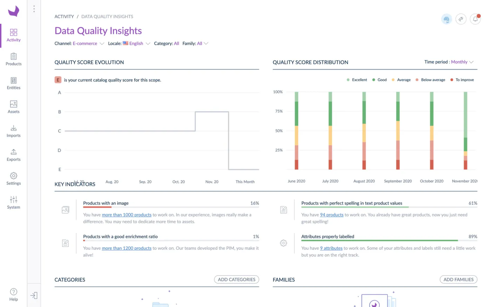
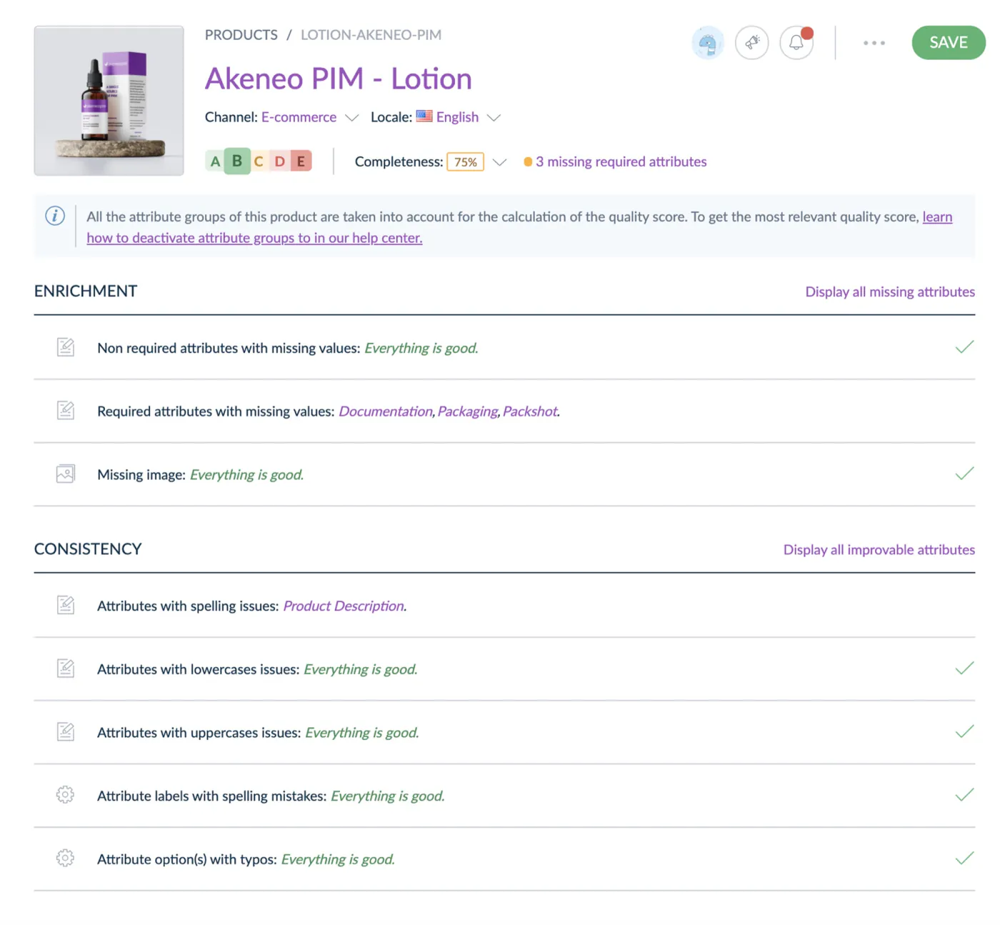
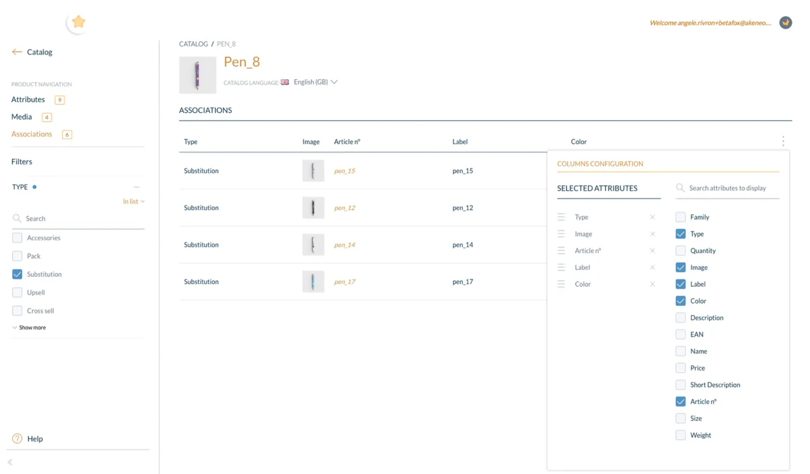
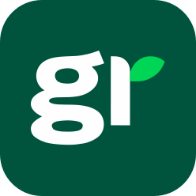
Greenly
- Lead Product Designer : construction de la stratégie design et de la culture produit, incluant la mise en place de rituels, le suivi des métriques, l'organisation de kick-offs trimestriels, de team buildings, le recrutement et l'acculturation des équipes au design. Équipe Design de 1 à 3 en 11 mois et création d'un tableau de compétences et de salaires dans le cadre de la politique de l'entreprise de transparence sur les salaires;
- Conception d'un persona partagé au sein de toute l'entreprise : Lauren;
- Lancement d'un Design System et refonte totale de la plateforme dans un objectif commerciale. Augmentation de nombre de verbatims positifs sur l'UX de la part de nos clients et fondamentaux toujours utilisés.
👁️ Interface à mon arrivée en T4 2021
⭐️ Nouvelle interface suite au lancement du Design System post T1 2023 : sur ce lien, sur ce lien aussi ou bien encore sur ce lien.
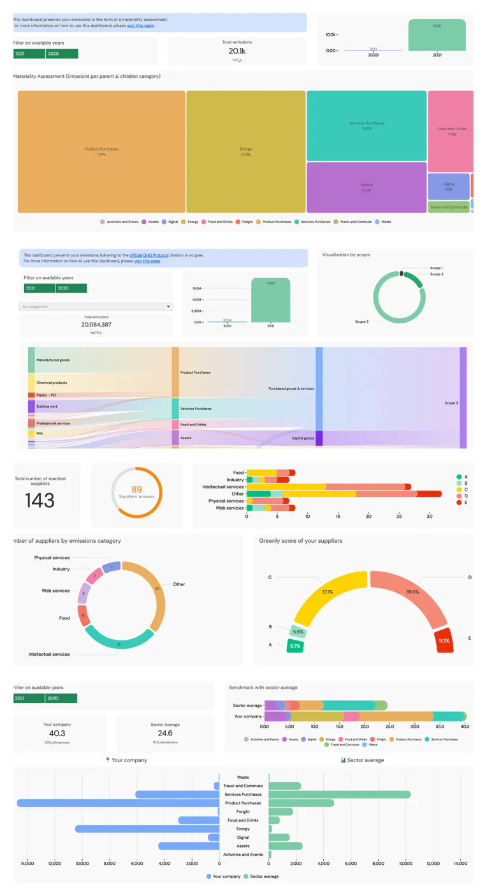
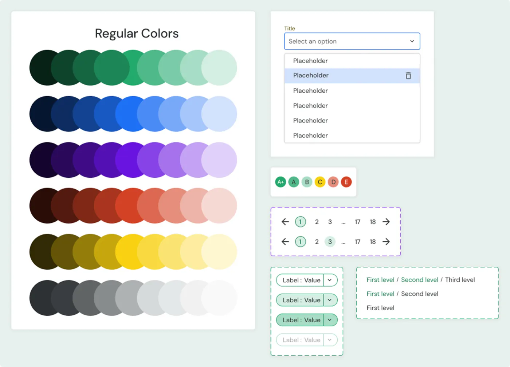
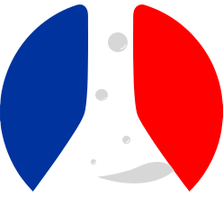
beta.gouv.fr
- Projet Zéro Logement Vacant (depuis juillet 2023) :
- refonte totale de l'expérience de l'outil : de nombreux retours positifs sur la facilité d'usage / NPS : 60 en T1 2025 et 68 fin T2 2026. Rapport de la Cour des Comptes qui souligne la satisfaction de l'outil (page 51, dernier paragraphe).
- Refonte de l'architecture de navigation du site vitrine. Soutien à notre objectif de notoriété : sur la requête « logement vacant », passage de 12 à 7 en terme de position moyenne sur Google en 3 mois.
- Suivi de la mise en conformité RGAA : 35,71% en juillet 2025 à 69,12% en juillet 2026;
- Contribution vibe coding via des PRs ou de l'édition dans le code directement depuis GitHub sur des sujets front : conception, correction de bugs, etc. Réduction du temps de production par 4;
- Bonus : obtention d'un financement de + de 50.000 € sur la mise en accessibilité de l'outil.
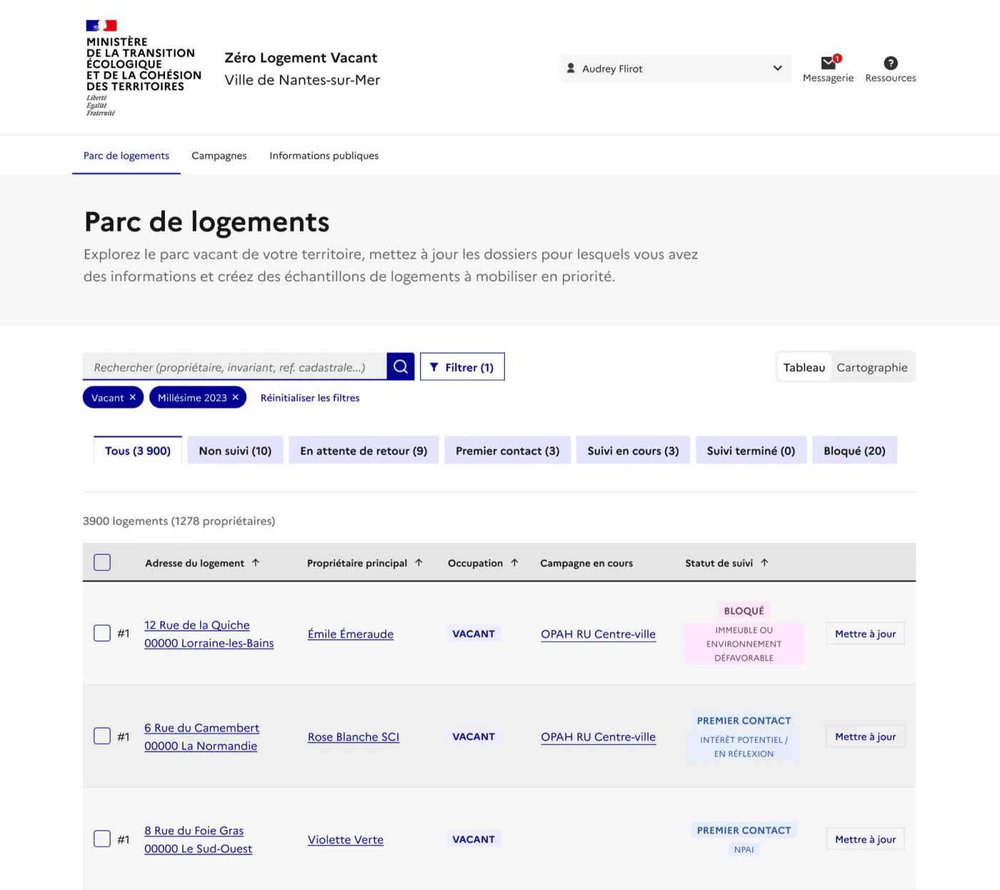
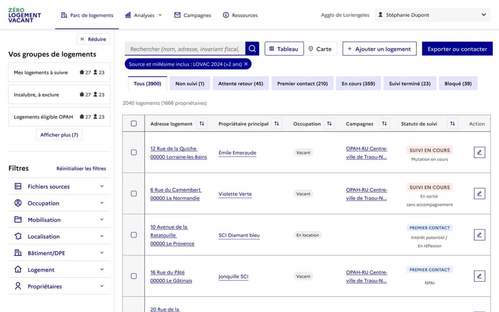
- Projet Que faire de mes objets et déchets (depuis janvier 2024) :
- Refonte du site Internet, des pages d'accueil et des fiches objets et déchets. Le pourcentage de personnes indiquant savoir quoi faire après avoir lu une fiche objet/déchet est passé de 58 % en T2 2025 à 66 % en T2 2026.
- conception UX de la première carte de l'économie circulaire en France
- Prototypage IA de l'assistant au tri, à la réparation, au réemploi et tests terrains sur Nantes et Angers en guerilla-tests.
- Recherche usager quantitative et qualitative pour définir des personas B2C : création de Anne, la trieuse engagée.
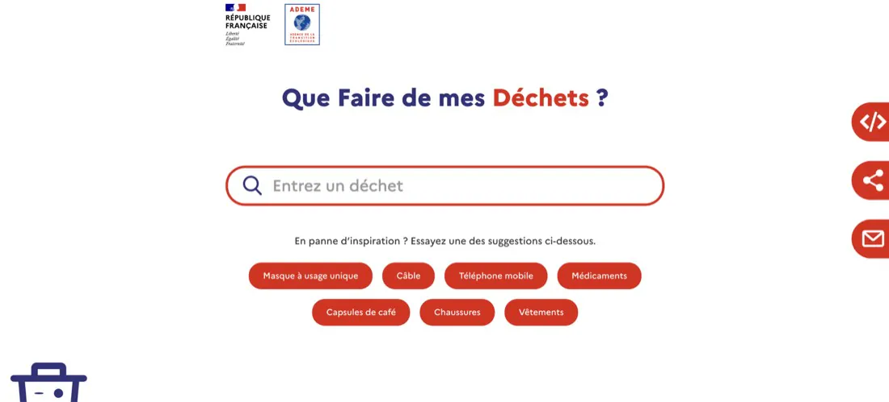
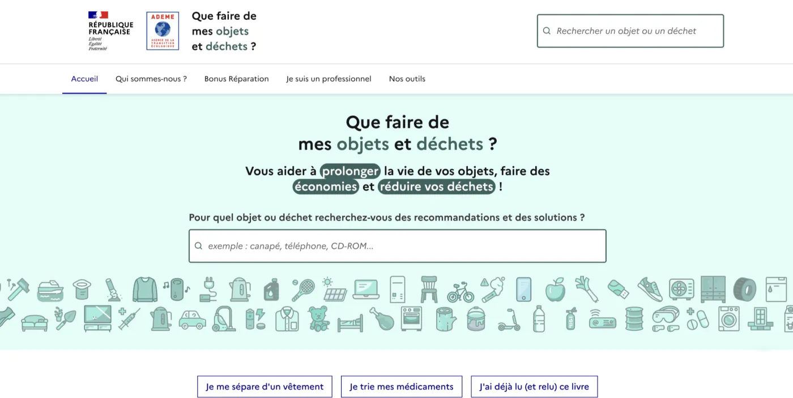
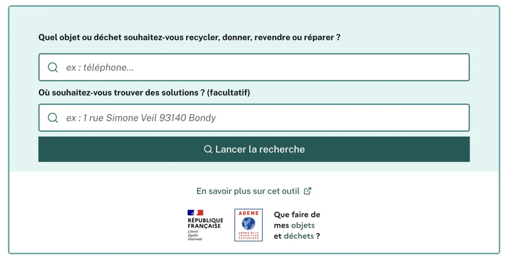
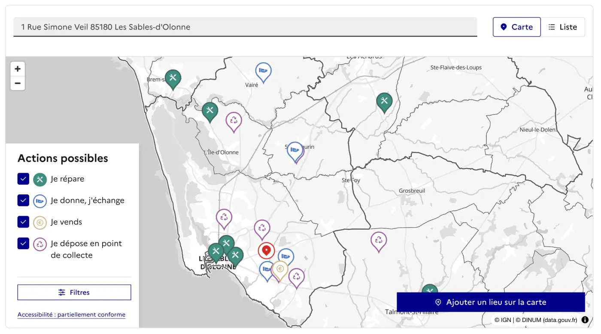


Ma façon de travailler
Social
Tourné vers les autres et curieux, je cherche à améliorer l'expérience des usagers tout en facilitant le travail des équipes avec lesquelles je collabore.
Franc
Transparent, direct et respectueux, nous partageons les constats ensemble et avançons ensemble sans surprise.
Volontaire
Polyvalent, j'aime être le couteau suisse d'une équipe et être en support sur des domaines comme le SEO, l'accessibilité, le code ou encore le marketing et le développement commercial/fidélité.
Ce qu'ils en ont pensé
Florence Le Guellec Akeneo
*****
“J'ai eu la chance de travailler avec Lucas pendant 2 ans sur deux lancements de feature ou produit. A l'écoute des besoins utilisateurs, enjeux business et contraintes techniques, il est un parfait partenaire pour un product manager.Voir sur LinkedIn
Lucas maîtrise tous les aspects du product design (du discovery au delivery and growth) et sait parfaitement interagir avec toutes les parties prenants internes : product management et engineering évidemment mais également data, product marketing, sales et CSM.
Sa curiosité intellectuelle et ses qualités collaboratives sont des atouts dans une équipe. Je retravaillerai avec plaisir avec lui et ne peux que le recommander.”
Yvan Chevalier Beetween
*****
“Lucas nous a accompagné sur des missions courtes mais très stratégiques, d'amélioration UX/UI. Sa compréhension du besoin a été très rapide et a permis a Lucas de nous faire des wireframes puis maquettes de qualité, en gardant une cohérence UX/UI très précise. Son sens de l'adaptation a permis de pouvoir également former les équipes et les accompagner dans les optimisations graphiques.”Voir sur LinkedIn
Laura Maréchal WeSuggest
*****
“J'ai eu le plaisir de collaborer avec Lucas sur une mission stratège d'audit d'UX/UI de notre plateforme. Lucas nous a livré une analyse complète et détaillée, mixant préconisations, veille concurrentielle et bonnes pratiques. Grâce à son travail, nous avons pu confirmer nos doutes, et refondre la plateforme pour avoir une app plus moderne, intuitive et en phase avec nos objectifs. Je recommande Lucas pour son travail de qualité, sa bonne humeur et son enthousiasme !”Voir sur LinkedIn
Bianca Chong Greenly
*****
“I had the pleasure of working with Lucas, who was the Lead Product Designer of our team, for 4 months. Lucas was an empathetic manager who really knew how to listen and ask thoughtful questions; a testament to his skills as a UX designer. I learned so much from his attentive guidance and admired his great communication skills, stakeholder management, and his positive influence on the product. He was not only excellent at rapid and strategic decision making, he was also always thinking about the long term vision of the product and most importantly the sustainable growth of our product design team. I highly recommend working with Lucas :)”
Voir sur LinkedIn
Raphaël Mucha Greenly
*****
“J'ai travaillé pendant 6mois dans l'équipe design de Lucas, une super expérience ! Lucas est un manager très à l'écoute et toujours de bons conseils. Il accorde beaucoup d'importance au bien-être de son équipe et laisse la place à l'échange. Toujours partant pour tester de nouvelles méthodologies/outils poussés par l'équipe : j'ai beaucoup apprécié son regard critique, fondé et bienveillant. Je recommande vivement de travailler avec Lucas 💪”Voir sur LinkedIn
Amandine Collard Ministère de l'Agriculture et de la Souveraineté Alimentaire
*****
“Lucas nous a accompagné pour une mission ponctuelle qui nous a permis de débloquer le parcours utilisateur de déclaration de données. Il a su rapidement apprivoiser le sujet et s'adapter aux membres de l'équipe. Une belle énergie et des compétences certaines dans son domaine. Merci !”Voir sur LinkedIn
Peggy Mertiny Zéro Logement Vacant
*****
“Lucas est investi, inventif et à l'écoute des besoins du produit auxquels il répond avec pertinence et réactivité. Il est une ressource précieuse pour Zéro Logement Vacant.”Voir sur LinkedIn
À votre écoute
Mon agenda est grand ouvert si vous souhaitez qu'on échange sur des questions ou sur votre projet.
Prendre un rendez-vousPour qui je vote ?
Ah oups, désolé, je vais un peu vite en besogne ! En échange et pour parler un peu de moi, voici des photos de lieux que j'adore.
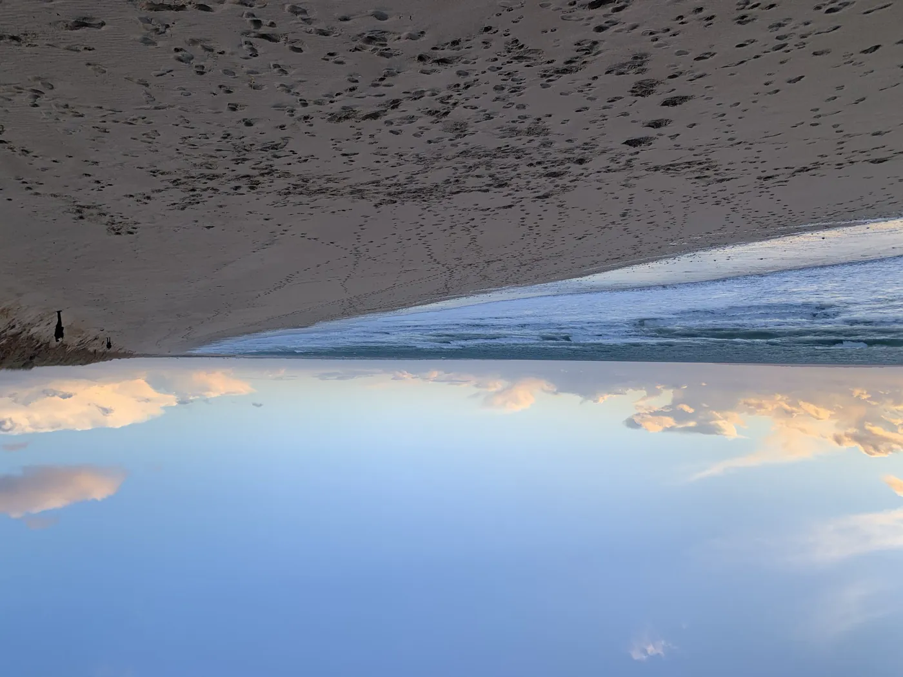
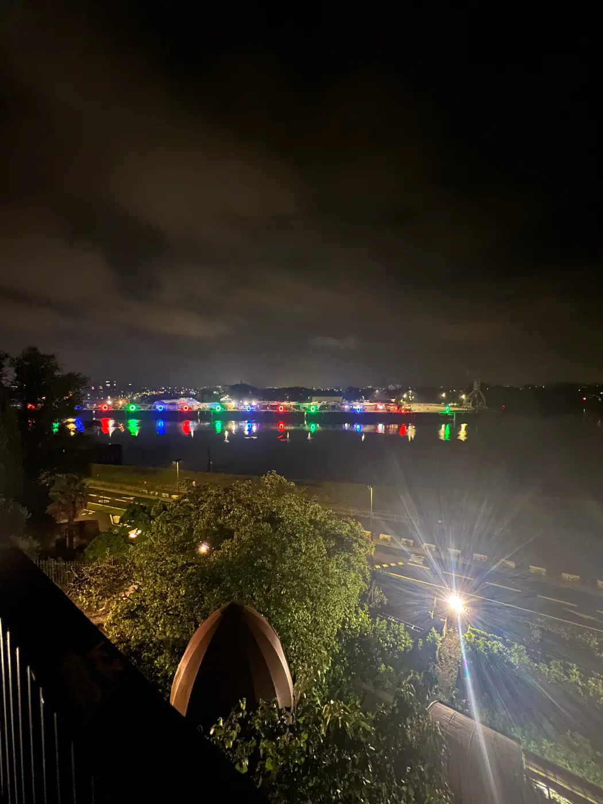
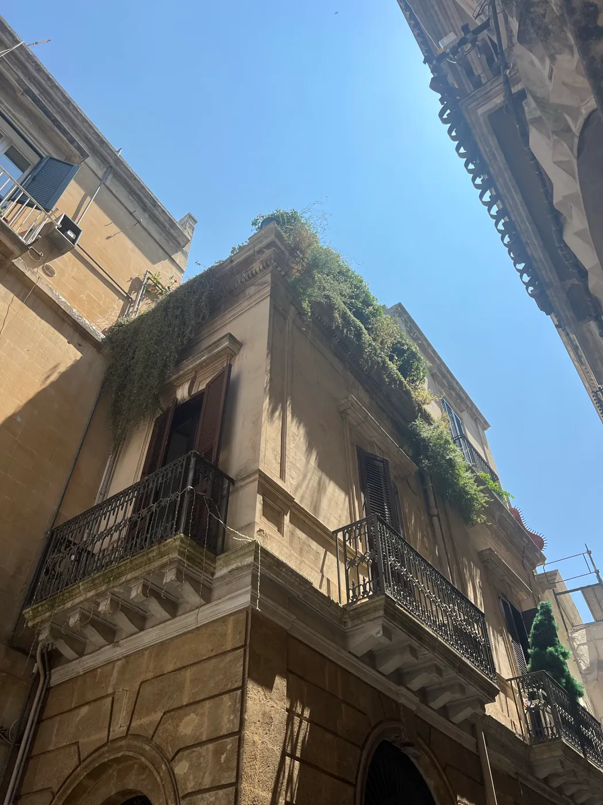
Des questions, des réponses !
Toutes les réponses à vos questions en moins de 150 caractères (et pourtant, je suis un grand bavard) :
Où opères-tu ?
Je peux facilement me déplacer dans le Grand Ouest et en région Parisienne. Autrement, télétravail.
Quels outils utilises-tu ?
Figma, Notion, Claude, Le Chat et Vibe Code de Mistral, Manus, Posthog, Matomo, Google Search Console, Mobbin, Storybook, Github, spatules, lisses, fourrures ... ah non pardon, ça, c'est pour les travaux.
Où as-tu appris tout ça ?
Je suis titulaire d'un brevet des collèges ... ah oui, 254 caractères, pardon. BTS Communication (ENC Communication) + Mastère UX Design (ECV Nantes) en alternance.